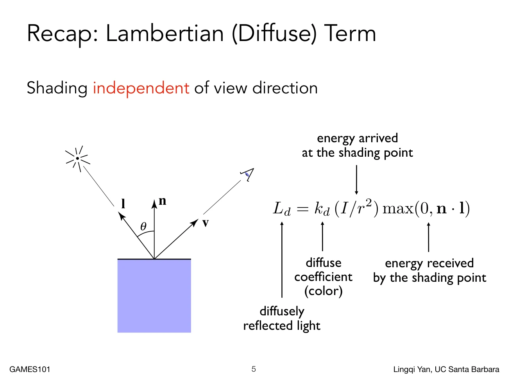
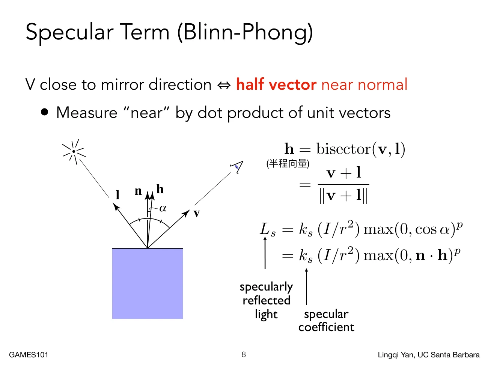
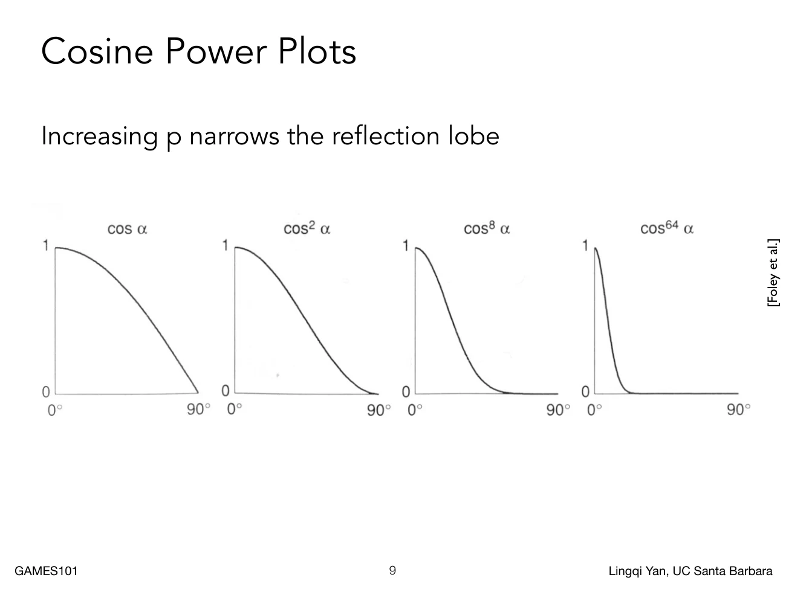
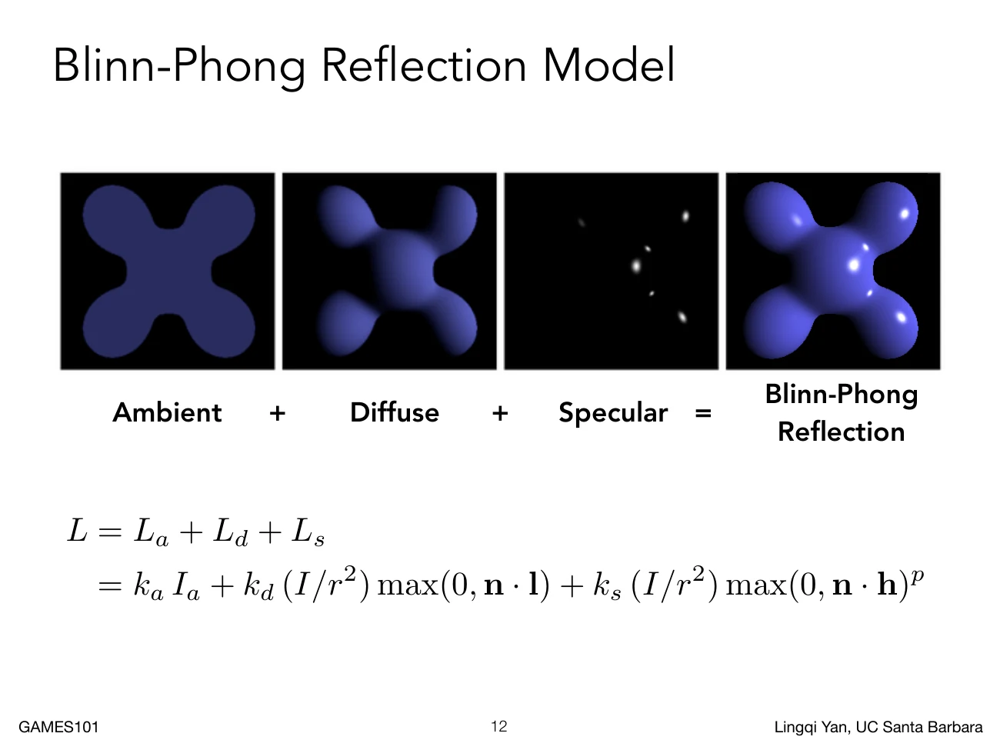
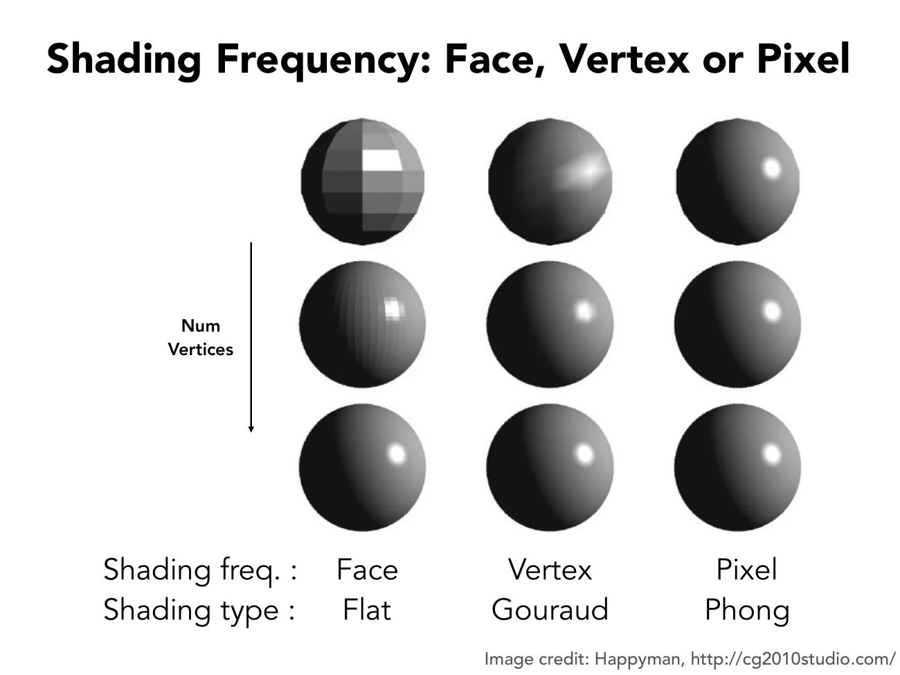
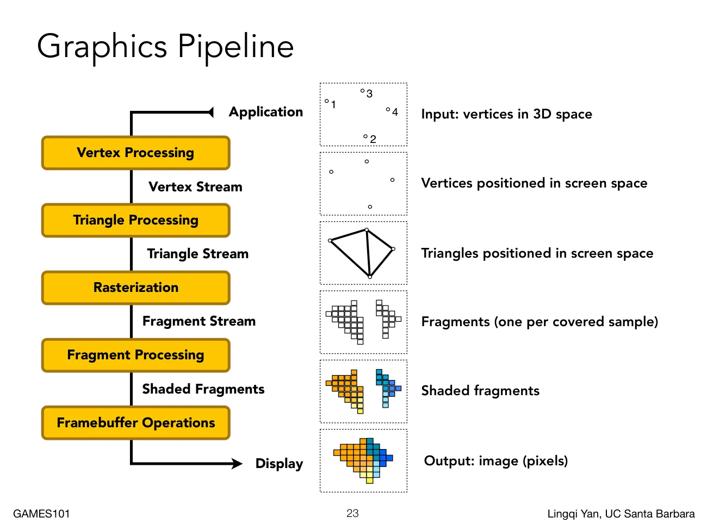
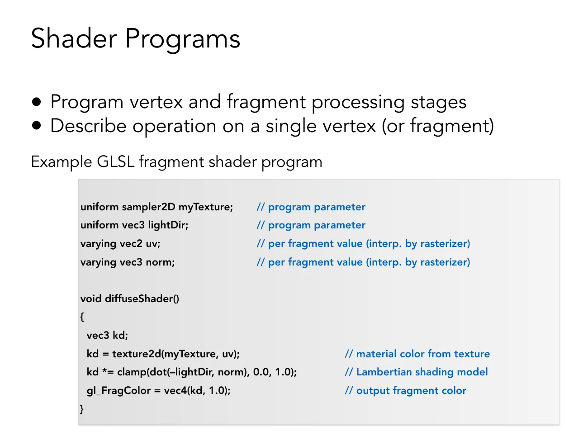
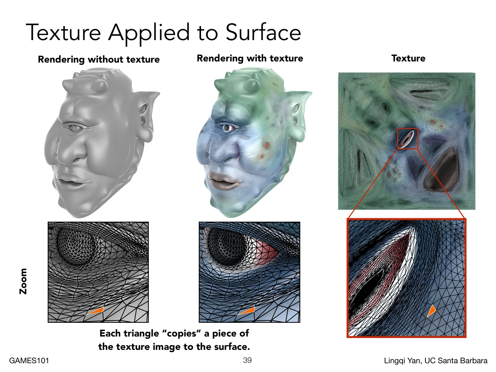
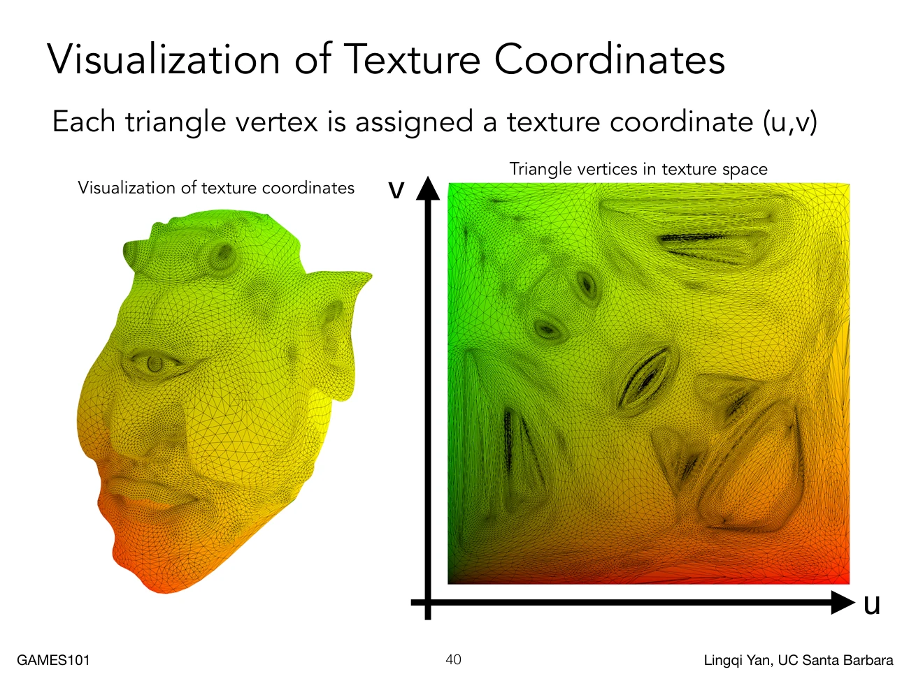

第 8 讲：着色（一）——Blinn-Phong 光照模型
从点光源到像素颜色：用 Blinn-Phong 模型把环境光、漫反射和高光加起来，并理解着色频率与图形管线。
◆ 学完这一讲，你应该能
能写出 Blinn-Phong 反射模型的完整公式，并解释环境光、漫反射、高光三项各自的物理直觉与参数作用。
能说明半程向量（half vector）如何替代镜面反射方向，以及高光指数 p 对高光范围的影响。
能区分平面着色（flat）、Gouraud 着色和 Phong 着色三种着色频率，并说明各自的法线来源与适用场景。
能描述实时渲染管线的主要阶段（应用、顶点处理、三角形处理、光栅化、片元处理、帧缓冲），并知道着色发生在片元处理阶段。
能理解纹理映射的基本思想：用纹理坐标 (u,v) 把 2D 图像贴到 3D 表面，并知道每个三角形对应纹理的一块区域。
核心结论速记
Blinn-Phong 模型 = 环境光 + 漫反射 + 高光，分别用系数 k_a、k_d、k_s 控制强度。
漫反射项与观察方向无关，只取决于法线 n 与光线方向 l 的夹角；高光项依赖观察方向，用半程向量 h 与法线 n 的夹角衡量。
半程向量 h = (v + l) / ||v + l||，用 n·h 的幂函数近似镜面反射，指数 p 越大高光越集中。
环境光是一个常数项，用来近似全局光照并填补阴影，不是物理精确的。
着色频率决定光照计算发生在哪里：平面着色每三角形一次，Gouraud 每顶点一次并插值颜色，Phong 每像素一次并插值法线。
逐像素着色需要插值法线，插值后必须归一化，否则光照结果会出错。
实时渲染管线中，顶点处理负责坐标变换，光栅化把三角形离散成片元，片元处理执行着色（包括 Blinn-Phong 和纹理采样）。
纹理映射给表面每个点一个颜色，通过纹理坐标 (u,v) 把 2D 图像映射到 3D 表面，是增加细节的主要手段。
011. 从漫反射复习开始：为什么需要高光和环境光
上一讲我们学了 Lambertian 漫反射项： \[ L_d = k_d \frac{I}{r^2} \max(0, \mathbf{n} \cdot \mathbf{l}) \] 其中 \(k_d\) 是漫反射系数（表面颜色），\(I/r^2\) 是点光源到达着色点的能量（随距离平方衰减），\(\mathbf{n}\) 是法线，\(\mathbf{l}\) 是着色点到光源的单位方向。
漫反射的特点是与观察方向无关：无论你从哪个方向看，只要光源和表面不变，亮度就一样。这符合粗糙表面（如粉笔、木头）的直觉。
但真实世界还有两类现象漫反射解释不了：
- 高光：光滑表面（金属、塑料）在特定视角下出现亮斑，亮度强烈依赖观察方向。
- 环境光：背光面不是全黑，因为周围环境有间接光照。
Blinn-Phong 模型用三项分别近似这三种效果： \[ L = L_a + L_d + L_s \] 其中 \(L_a\) 是环境光，\(L_d\) 是漫反射，\(L_s\) 是高光。这一讲的重点就是补上 \(L_s\) 和 \(L_a\)，并讨论着色频率与管线。

补充说明
这里假设点光源，且忽略光源颜色，只考虑强度 \(I\)。
常见坑
把 \(\mathbf{l}\) 当成光源指向着色点的方向 → 点积符号反了，亮面变暗面 → 统一约定 \(\mathbf{l}\) 为着色点指向光源。
忘记 \(\max(0, \cdot)\) → 背光面出现负亮度或异常亮斑 → 点积后取 0 截断。
UE / Unity 落地
UE 的默认材质中，Base Color 对应 \(k_d\)，Metallic/Roughness 会影响高光表现，但底层仍可追溯到类似的反射模型。
Unity 的 Standard Shader 中 Albedo 对应漫反射颜色，Smoothness 控制高光锐利程度。
022. 高光项：用半程向量近似镜面反射
高光的物理直觉是：当观察方向 \(\mathbf{v}\) 接近镜面反射方向 \(\mathbf{R}\) 时，表面看起来最亮。直接计算 \(\mathbf{R}\) 再比较 \(\mathbf{v}\) 与 \(\mathbf{R}\) 的夹角是可行的，但 Blinn-Phong 用了一个更省事的技巧：
定义半程向量（half vector）： \[ \mathbf{h} = \frac{\mathbf{v} + \mathbf{l}}{\|\mathbf{v} + \mathbf{l}\|} \] 它是观察方向与光线方向的角平分线方向。当 \(\mathbf{v}\) 接近镜面反射方向时，\(\mathbf{h}\) 会接近法线 \(\mathbf{n}\)。因此可以用 \(\mathbf{n} \cdot \mathbf{h}\) 来衡量“接近程度”。
高光项写成： \[ L_s = k_s \frac{I}{r^2} \max(0, \mathbf{n} \cdot \mathbf{h})^p \] 其中 \(k_s\) 是高光系数（通常为白色或光源颜色），\(p\) 是高光指数（shininess）。
指数 \(p\) 的作用：\(p\) 越大，\(\max(0, \mathbf{n} \cdot \mathbf{h})^p\) 衰减越快，高光范围越窄、越锐利；\(p\) 越小，高光越宽越柔和。课件中给出了不同 \(p\) 的余弦幂曲线，可以看到 \(p\) 增大时反射瓣变窄。
注意：\(\mathbf{n}\)、\(\mathbf{h}\) 都必须是单位向量，否则点积不是余弦值，高光位置和强度都会错。


补充说明
Blinn-Phong 是对 Phong 模型的改进，用半程向量避免了计算反射方向，且高光形状更柔和。
常见坑
法线或半程向量未归一化 → 点积结果不在 [-1,1]，高光位置偏移、亮度异常 → 计算前确保 \(\mathbf{n}\) 和 \(\mathbf{h}\) 已归一化。
把 \(p\) 设成非整数或负数 → 高光形状怪异 → \(p\) 应为正实数，常用 1~1000。
当 \(\mathbf{v} + \mathbf{l}\) 接近零向量时归一化会爆炸 → 观察方向与光线方向几乎相反 → 实际中可加极小值保护或忽略该情况。
UE / Unity 落地
UE 材质中的 Specular 输入控制高光强度，Roughness 间接影响高光指数（粗糙度越低高光越锐利）。
Unity 的 Smoothness 参数对应高光指数，值越大高光越集中。
Blinn-Phong 高光项伪代码（hlsl）
float3 h = normalize(v + l);
float spec = pow(max(0.0, dot(n, h)), p);
float3 Ls = ks * (I / (r * r)) * spec;033. 环境光项与完整 Blinn-Phong 模型
环境光项是一个常数： \[ L_a = k_a I_a \] 其中 \(k_a\) 是环境光系数，\(I_a\) 是环境光强度。它不依赖法线、光源方向或观察方向，纯粹是为了给阴影区域一个基础亮度，避免全黑。课件强调这是近似/伪造的，不是物理正确的全局光照。
把三项加起来，得到完整的 Blinn-Phong 反射模型： \[ L = L_a + L_d + L_s = k_a I_a + k_d \frac{I}{r^2} \max(0, \mathbf{n} \cdot \mathbf{l}) + k_s \frac{I}{r^2} \max(0, \mathbf{n} \cdot \mathbf{h})^p \]
这个公式是实时渲染中最经典的着色模型之一。它的参数包括：
- \(k_a, k_d, k_s\)：环境光、漫反射、高光系数（颜色向量）。
- \(p\)：高光指数。
- \(I, I_a\)：光源强度和环境光强度。
- \(r\)：着色点到光源的距离。
实际使用时，这些系数通常由材质决定，光源参数由场景决定。公式中的 \(\max(0, \cdot)\) 保证不会出现负亮度。

补充说明
课件中环境光项写作 \(L_a = k_a I_a\)，注意 \(I_a\) 是环境光强度，不是点光源强度。
常见坑
把环境光系数 \(k_a\) 设得过大 → 阴影区域过亮，失去立体感 → 通常 \(k_a\) 较小，或改用环境贴图。
三项直接相加可能超过 1 → 颜色过曝 → 最后做色调映射或截断到 [0,1]。
UE / Unity 落地
UE 的材质中，Ambient Occlusion 输入可以模拟环境光遮蔽，比常数环境光更真实。
Unity 的 Ambient 设置（Environment Lighting）提供全局环境光，材质中的 Emission 可补充自发光。
044. 着色频率：平面、顶点、像素三种做法
有了着色公式，下一个问题是：在哪里计算着色？ 这称为着色频率（shading frequency）。课件给出三种经典方式：
- 平面着色（Flat shading）：每个三角形计算一次着色，使用三角形的面法线。整个三角形颜色均匀。适合低多边形风格，但光滑表面会有明显棱角。
- Gouraud 着色：每个顶点计算一次着色，然后三角形内部对颜色进行插值。每个顶点需要法线，通常由周围面法线平均得到。比平面着色平滑，但高光可能不准确。
- Phong 着色：每个像素（片元）计算一次着色，三角形内部对法线进行插值，然后逐像素计算完整光照模型。效果最平滑，高光最准确。注意 Phong 着色不是 Blinn-Phong 反射模型，前者是着色频率，后者是光照公式。
课件用一张图对比了三种频率的效果：平面着色棱角分明，Gouraud 着色有平滑过渡但高光可能偏小，Phong 着色最接近光滑表面。
逐顶点法线的获取：最好从原始几何（如球体）直接得到；否则可以简单地对周围三角形面法线求平均，再归一化。逐像素法线则通过重心坐标插值顶点法线得到，插值后必须归一化。

补充说明
课件提到“Phong shading”不是“Blinn-Phong reflectance model”，注意区分。
常见坑
插值后的法线未归一化 → 光照强度偏暗或高光位置错误 → 在片元着色器中重新 normalize。
把 Phong 着色和 Blinn-Phong 模型混为一谈 → 概念混淆 → 记住前者是频率，后者是公式。
顶点法线平均时未考虑面积权重 → 法线方向偏差 → 可按三角形面积加权平均。
UE / Unity 落地
UE 中静态网格体的法线在导入时计算，材质中可选择使用顶点法线或像素法线（通过 Normal 输入）。
Unity 的 Mesh 设置中有 Normals 导入选项，Shader 中可在顶点着色器传递法线并在片元着色器归一化。
055. 实时渲染管线：着色发生在哪一步
课件用一张流程图展示了实时渲染管线（graphics pipeline）的主要阶段：
- 应用阶段（Application）：CPU 准备顶点数据、变换矩阵、光源等。
- 顶点处理（Vertex Processing）：对每个顶点执行模型、视图、投影变换，输出屏幕空间顶点。
- 三角形处理（Triangle Processing）：组装三角形，进行裁剪等。
- 光栅化（Rasterization）：把三角形离散成片元（fragment），每个片元对应一个采样点。
- 片元处理（Fragment Processing）：对每个片元执行着色，包括 Blinn-Phong 光照计算和纹理采样。
- 帧缓冲操作（Framebuffer Operations）：深度测试、混合等，最终输出图像。
着色（shading）发生在片元处理阶段，这也是为什么逐像素着色需要插值法线。光栅化阶段会判断三角形覆盖了哪些像素，并插值顶点属性（如法线、纹理坐标）。
现代 GPU 就是为这个管线设计的专用处理器，顶点和片元着色器程序在 GPU 上并行执行。课件提到 GPU 有数百到数千个核心，提供 Tera-FLOPs 级性能。

补充说明
管线中的“三角形处理”有时归入图元装配阶段，课件将其单列。
常见坑
认为着色只发生在顶点阶段 → 无法理解逐像素光照 → 记住片元处理阶段执行着色器。
忽略光栅化中的插值 → 片元属性错误 → 光栅化会插值顶点属性，但插值后需归一化法线。
UE / Unity 落地
UE 的渲染管线中，Base Pass 的像素着色器执行材质光照计算，对应片元处理阶段。
Unity 的 Shader 中，顶点着色器（vert）和片元着色器（frag）分别对应顶点处理和片元处理。
066. 着色器程序：在 GPU 上写光照
着色器程序（shader program）是运行在 GPU 上的程序，分为顶点着色器和片元着色器。课件给出一个 GLSL 片元着色器的例子：
uniform sampler2D myTexture; // 程序参数
uniform vec3 lightDir; // 程序参数
varying vec2 uv; // 片元值（由光栅化插值）
varying vec3 norm; // 片元值（由光栅化插值）
void diffuseShader() {
vec3 kd;
kd = texture2D(myTexture, uv);
kd *= clamp(dot(-lightDir, norm), 0.0, 1.0);
gl_FragColor = vec4(kd, 1.0);
}
这个着色器对每个片元执行一次，输出该片元的颜色。uniform 是程序级参数（所有片元共享），varying 是从顶点着色器传递并插值得到的片元级值。
着色器程序让开发者可以编程控制顶点和片元的处理，实现各种光照和纹理效果。课件还展示了用着色器程序实时渲染的复杂场景（如蜗牛），说明着色器可以程序化生成几何和光照。

补充说明
课件中的 lightDir 是光源方向，点积时取负号，注意方向约定。
常见坑
在片元着色器中直接使用未归一化的 varying 法线 → 光照错误 → 使用前 normalize(norm)。
把 uniform 当成每片元变化 → 逻辑错误 → uniform 在一次绘制调用中不变。
UE / Unity 落地
UE 的材质编辑器底层生成 HLSL 着色器，节点连接对应着色器代码。
Unity 的 ShaderLab 中，CGPROGRAM 块内写 HLSL 着色器，vert 和 frag 函数分别对应顶点和片元着色器。
课件中的 GLSL 片元着色器示例（glsl）
uniform sampler2D myTexture;
uniform vec3 lightDir;
varying vec2 uv;
varying vec3 norm;
void diffuseShader() {
vec3 kd;
kd = texture2D(myTexture, uv);
kd *= clamp(dot(-lightDir, norm), 0.0, 1.0);
gl_FragColor = vec4(kd, 1.0);
}077. 纹理映射：给表面加上细节颜色
纹理映射（texture mapping）解决“不同位置有不同颜色”的问题。比如木地板有木纹，足球有图案。
基本思想：3D 表面是 2D 的，每个 3D 表面点都可以映射到一张 2D 图像（纹理）上的一个位置。这个位置用纹理坐标 \((u,v)\) 表示，通常 \(u,v \in [0,1]\)。
在渲染时，每个三角形顶点被赋予一个纹理坐标，光栅化时插值得到片元的纹理坐标，然后在片元着色器中采样纹理，得到颜色。这样每个三角形就像“复制”了纹理图像的一小块到表面上。
课件展示了纹理坐标的可视化：在纹理空间中，三角形顶点对应 \((u,v)\) 坐标；在渲染结果中，纹理被贴到 3D 表面。纹理可以重复使用（tiling），通过设置纹理坐标超出 [0,1] 并设置寻址模式为重复。
纹理映射是增加表面细节最常用的手段，后续课程会讲更多纹理技术（如 Mipmap、各向异性过滤等）。


补充说明
纹理坐标有时也称 UV 坐标，u 对应水平方向，v 对应垂直方向。
常见坑
纹理坐标未归一化或超出范围 → 纹理重复或拉伸 → 检查 UV 坐标和寻址模式。
在片元着色器中采样纹理时未考虑透视校正 → 纹理扭曲 → 光栅化会自动进行透视校正插值，但自定义插值需注意。
UE / Unity 落地
UE 的材质中，Texture Sample 节点使用 UV 坐标采样纹理，TexCoord 节点提供纹理坐标。
Unity 的 Shader 中，sampler2D 和 tex2D 函数用于纹理采样，UV 坐标由顶点着色器传递。
引擎对照表
| 概念 / 效果 | Unreal Engine | Unity |
|---|---|---|
漫反射颜色 | Base Color 输入 | Albedo 颜色 |
高光强度/锐利度 | Specular 输入、Roughness | Smoothness、Metallic |
环境光 | Ambient Occlusion、Sky Light | Environment Lighting、Ambient |
逐像素法线 | Normal 输入（像素法线） | 法线贴图、顶点法线插值 |
纹理采样 | Texture Sample 节点 | tex2D 函数、sampler2D |
着色器编程 | 材质编辑器（节点生成 HLSL） | ShaderLab + HLSL |
术语双语表
| English | 中文 | 说明 |
|---|---|---|
| Blinn-Phong reflectance model | Blinn-Phong 反射模型 | 环境光、漫反射、高光三项相加的经典光照模型。 |
| Half vector | 半程向量 | 观察方向与光线方向的角平分线方向，用于近似镜面反射。 |
| Shininess | 高光指数 | 控制高光范围的指数 p，越大高光越集中。 |
| Flat shading | 平面着色 | 每个三角形计算一次着色，使用面法线。 |
| Gouraud shading | Gouraud 着色 | 每个顶点计算着色，三角形内插值颜色。 |
| Phong shading | Phong 着色 | 每个像素计算着色，三角形内插值法线。 |
| Graphics pipeline | 图形管线 | 从顶点到像素的实时渲染流程。 |
| Rasterization | 光栅化 | 把三角形离散成片元的过程。 |
| Texture mapping | 纹理映射 | 用 2D 图像给 3D 表面着色。 |
| Barycentric coordinates | 重心坐标 | 用于三角形内插值的坐标系统。 |
课后练习
01 写出 Blinn-Phong 反射模型的完整公式，并说明每一项的物理意义。
查看答案
提示：
三项：环境光、漫反射、高光。
\(L = k_a I_a + k_d \frac{I}{r^2} \max(0, \mathbf{n} \cdot \mathbf{l}) + k_s \frac{I}{r^2} \max(0, \mathbf{n} \cdot \mathbf{h})^p\)。第一项环境光近似全局光照；第二项漫反射与观察方向无关；第三项高光依赖观察方向，用半程向量近似镜面反射。
02 已知单位向量 \(\mathbf{v} = (0,0,1)\)，\(\mathbf{l} = (0,1,0)\)，\(\mathbf{n} = (0,0,1)\)，高光指数 \(p=2\)，\(k_s=1\)，\(I/r^2=1\)。求高光项 \(L_s\)。
查看答案
提示：
先算半程向量 \(\mathbf{h}\)，再算 \(\mathbf{n} \cdot \mathbf{h}\)。
\(\mathbf{h} = \frac{(0,0,1)+(0,1,0)}{\|(0,1,1)\|} = (0, \frac{1}{\sqrt{2}}, \frac{1}{\sqrt{2}})\)。\(\mathbf{n} \cdot \mathbf{h} = \frac{1}{\sqrt{2}}\)。\(L_s = 1 \cdot 1 \cdot (\frac{1}{\sqrt{2}})^2 = 0.5\)。
03 比较平面着色、Gouraud 着色和 Phong 着色三种频率的优缺点，并说明各自适用的场景。
查看答案
提示：
从计算量、平滑度、高光准确性考虑。
平面着色计算量最小，但棱角明显，适合低多边形风格；Gouraud 着色每顶点计算，插值颜色，较平滑但高光可能不准确，适合中等精度；Phong 着色每像素计算，插值法线，效果最平滑，高光准确，但计算量最大，适合高质量渲染。
04 在实时渲染管线中，着色发生在哪个阶段？光栅化阶段做了什么？
查看答案
提示：
参考管线流程图。
着色发生在片元处理阶段。光栅化阶段把三角形离散成片元，判断哪些像素被覆盖，并插值顶点属性（如法线、纹理坐标）。
05 纹理映射中，纹理坐标 \((u,v)\) 的作用是什么？如何让纹理在表面上重复平铺？
查看答案
提示：
考虑寻址模式。
\((u,v)\) 坐标把 3D 表面点映射到 2D 纹理图像上的位置，用于采样颜色。要让纹理重复平铺，可将纹理坐标设置为超出 [0,1] 范围，并将纹理寻址模式设为重复（repeat/wrap）。